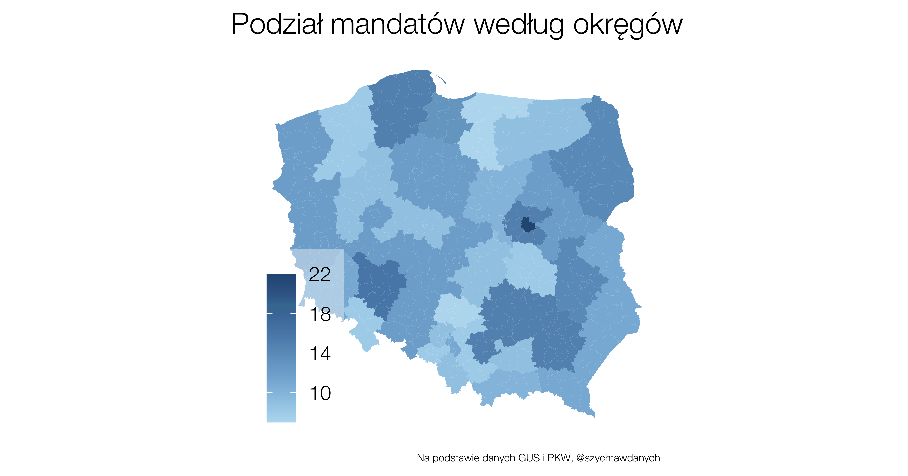
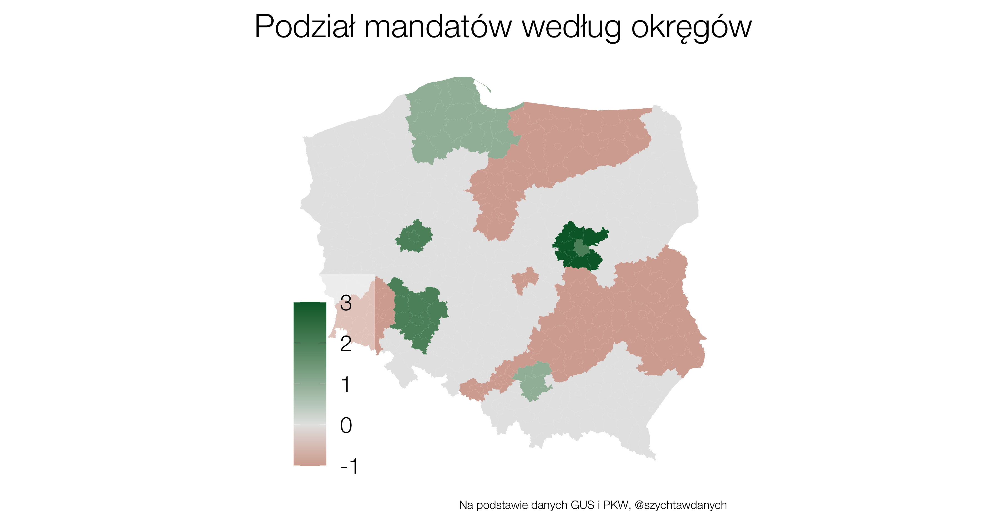
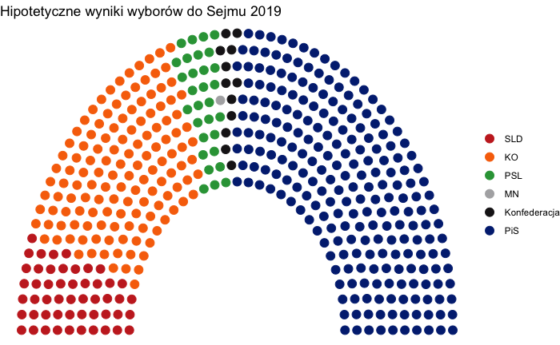

Tak jak w ostatnim wpisie o mieszkalnictwie zaczniemy od kwestii bardzo formalnej – Konstytucji RP
,,wybory do Sejmu są powszechne, równe, bezpośrednie i proporcjonalne oraz odbywają się w głosowaniu tajnym”
W dzisiejszym wpisie postaramy się ukazać, że równość głosów to iluzoryczna. Dodatkowo pokażemy, jak niewielkimi zmianami Sejm mógłby poprawić obecny stan rzeczy, nie ingerując w granice okręgów wyborczych.
Kilka dni temu ukazał się w sieci ciekawy materiał na temat wyborów do Senatu i bardzo dużych dysproporcji pomiędzy wielkościami okręgów senackich. Tłumaczy on między innymi jakimi zasadami kierowano się przy ustalaniu granic okręgów. Zainteresowanych odsyłam do tego materiału. My natomiast przyjmiemy granice okręgów do Sejmu ,,z dobrodziejstwem inwentarza” i będziemy modyfikować liczbę mandatów do zdobycia w każdym z nich.
Stan faktyczny
Obecnie Polska jest podzielona na 41 okręgów wyborczych do Sejmu. Podział ten został ustalony w 2011 roku i od tej pory nie uległ zmianie.
Dla porównania, USA aktualizują podział miejsc w Kongresie między poszczególne stany po każdym spisie powszechnym, czyli co 10 lat.
W 2011 roku stawiano sobie za cel, aby liczba wyborców na jeden mandat była w miarę równa w każdym okręgu. Jeśli jednak przyjrzymy się dzisiejszym liczbom, różnice są znaczące.
Stosunek liczby wyborców do liczby mandatów odniesiemy do ogólnopolskiej średniej (tę wartość nazywać będziemy umownie ,,siłą głosu”).
| Okręg | Siedziba | Liczba mandatów | Siła głosu |
|---|---|---|---|
| 3 | Wrocław | 14 | 85.2% |
| 7 | Chełm | 12 | 108.6% |
| 13 | Kraków | 14 | 90.8% |
| 19 | Warszawa | 20 | 89.6% |
| 20 | Warszawa | 12 | 83.0% |
| 25 | Gdańsk | 12 | 91.4% |
| 32 | Katowice | 9 | 111.2% |
| 34 | Elbląg | 8 | 110.4% |
| 39 | Poznań | 10 | 84.4% |
| 40 | Koszalin | 8 | 107.6% |
Z powyższej tabeli odczytać można, że siła głosu mieszkańców Wrocławia, Warszawy czy Poznania to jedynie 70-75% tego co w naszej ordynacji wyborczej otrzymują mieszkańcy Katowic, Koszalina czy Chełma.
Stali czytelnicy Szychty wiedzą, że podstawowy problem z liczbami jest taki, że często nie wiemy czy dana wartość jest mała czy duża. Potrzebujemy zobaczyć kontekst lub konsekwencje.
Okazuje się, że ma to spory wpływ na wyniki wyborów. Przykładowo, w wyborach w roku 2019 w okręgu poznańskim wybierano 10 posłów. W rezultacie mandatu nie zdobyła Konfederacja przez co 6.6% wyborców (34 tysiące osób) nie miało swojego reprezentanta w Sejmie. Po to mamy okręgi wielomandatowe, żeby takie sytuacje zdarzały się możliwie rzadko.
Temat jest więc istotny i czas sprawdzić, które okręgi powinny stracić posłów, a które zyskać.
Jak przesuwamy mandaty?
Przedstawimy prosty algorytm, który ma na celu minimalizować różnice w “sile głosu” między okręgami.
Dane
Liczbę wyborców szacuję na podstawie danych GUS (osoby mieszkające w powiatach według wieku) i PKW z poprzednich wyborów. Przyjmuję, że różnice w tych dwóch źródłach dla roku 2019 będą takie same dla roku 2023.
Algorytm
Uznajemy, że celem jest minimalizacja metryki będącej sumą po okręgach wartości bezwględnej różnicy liczby wyborców przypadających na jeden mandat oraz średniej ogólnopolskiej tj. łącznej liczby wyborców podzielonej na 460 mandatów. Innymi słowy, chcemy aby, patrząc ogólnopolsko, każdy okręg był możliwie blisko średniej wartości.
\[ \sum_{\text{okręgi wyborcze}} | \frac{\text{Liczba wyborców w okręgu}}{\text{Liczba mandatów w okręgu}} - \text{Średnia liczba wyborców na mandat} | \]
W powyższej sumie można by ważyć elementy sumy liczbą mandatów w okręgu, ale w tym wpisie poprzestaniemy na prostszej wersji.
Nasz algorytm będzie zachłanny, to znaczy w każdym kroku szukamy okręgu, w którym najbardziej się opłaca zmniejszyć liczbę mandatów oraz okręgu, w którym dodanie mandatu najbardziej zmniejszy naszą łączną miarę dopasowania.
Mandaty ,,przesuwamy” tak długo, jak długo zmniejsza to łączną odległość od średniej ogólnopolskiej.
Wyniki
Nowy podział mandatów jest następujący:

Okazuje się, że ze względu na zmiany demograficzne od roku 2011 należałoby ,,przenieść” 12 mandatów między okręgami. Jest to mniej więcej 3% wszystkich posłów, więc nie jest to bardzo duża różnica.
Które regiony by na tym zyskały, a które straciły?
| Okręg | Siedziba | Liczba mandatów | Zmiana | Siła głosu po zmianie | Siła głosu przed zmianą |
|---|---|---|---|---|---|
| 20 | Warszawa | 15 | 3 | 103.8% | 83.0% |
| 19 | Warszawa | 22 | 2 | 98.6% | 89.6% |
| 3 | Wrocław | 16 | 2 | 97.4% | 85.2% |
| 39 | Poznań | 12 | 2 | 101.4% | 84.4% |
| 13 | Kraków | 15 | 1 | 97.4% | 90.8% |
| 26 | Słupsk | 15 | 1 | 102.0% | 95.2% |
| 25 | Gdańsk | 13 | 1 | 99.2% | 91.4% |
| 33 | Kielce | 15 | -1 | 100.2% | 106.8% |
| 6 | Lublin | 14 | -1 | 98.2% | 105.2% |
| 5 | Toruń | 12 | -1 | 97.4% | 105.4% |
| 1 | Legnica | 11 | -1 | 96.8% | 105.6% |
| 7 | Chełm | 11 | -1 | 99.4% | 108.6% |
| 31 | Katowice | 11 | -1 | 98.6% | 107.6% |
| 9 | Łódź | 9 | -1 | 96.0% | 106.8% |
| 35 | Olsztyn | 9 | -1 | 95.8% | 106.4% |
| 17 | Radom | 8 | -1 | 95.4% | 107.2% |
| 30 | Bielsko-Biała | 8 | -1 | 95.2% | 107.0% |
| 32 | Katowice | 8 | -1 | 98.8% | 111.2% |
| 34 | Elbląg | 7 | -1 | 96.6% | 110.4% |
Mimo, że liczba zmian jest nieduża, to dotyczyłaby niemal połowy okręgów.

Czy ta zmiana mogłaby wpłynąć na wynik wyborów?
Krótka odpowiedź jest taka, że owszem, mogłaby. Aby to pokazać nałożyliśmy wyniki z roku 2019 roku na nasz nowy, proponowany podział mandatów.

W stosunku do faktycznych wyborów PiS z roku 2019 zdobyłby o 4 mandaty mniej. Dwóch posłów zyskałaby Lewica, a po jednym Konfederacja i Koalicja Obywatelska.
Jak widać zmiana ta nie jest bardzo duża, ale mogłaby się okazać kluczowa. Znacznie trudniej byłoby PiSowi dotrwać do końca obecnej kadencji u władzy, gdyby zaczynał z najmniejszą możliwą większością tj. 231 posłami. Wpłynęłoby to na układ sił i możliwości tworzenia koalicji.
Według sondaży na rok 2023 różnica między partiami prawicowymi a centrowymi i lewicowymi będzie bardzo mała. W takiej sytuacji różnica 4 posłów może okazać się kluczowa.
Podziękowanie
Dzięki Agata Sobczyk za pomysł i za konsultacje.